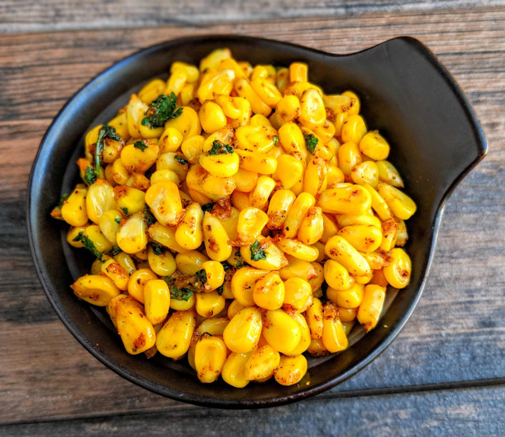

Sweet Corn
Ingredients
- Corn
- Butter
- Pepper
Recipe
- Step 1: Rinse the canned corn and drain well. Add to a microwave-safe bowl and top with the butter.
- Step 2: Microwave for between one and a half to two minutes, stirring every thirty seconds until the butter has melted and the corn is hot. Mix well.
- Step 3: Chop the cilantro and add it to the bowl along with all the other ingredients
- Step 4: Mix well and taste. Adjust seasoning as needed. Ladle into small bowls or paper cups and serve hot with small spoons. Enjoy!

Cranberry Cake
Ingredients
- Bread
- Cranberry
- Sugar
Recipe
- Step 1: Rinse the canned corn and drain well. Add to a microwave-safe bowl and top with the butter.
- Step 2: Microwave for between one and a half to two minutes, stirring every thirty seconds until the butter has melted and the corn is hot. Mix well.
- Step 3: Chop the cilantro and add it to the bowl along with all the other ingredients
- Step 4: Mix well and taste. Adjust seasoning as needed. Ladle into small bowls or paper cups and serve hot with small spoons. Enjoy!